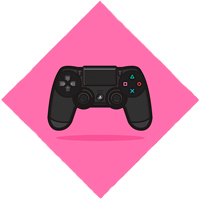
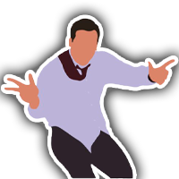

Atriz e modelo formada, barista com amor, maquiadora e dev junior.
Um compilado de inúmeros aprendizados. Resiliente e disruptiva. Um poço de curiosidade.
Tragetória profissional
Iniciei minha carreira de trabalho sendo barista em uma cafeteria dentro de um centro hospitalar. Dali pra frente foi só amor pela profissão. Mais adiante trabalhei como empacotadora e organizadora de estoque de uma empresa de produtos infantis.
Mas fiquei por pouco tempo pois logo entrei para o teatro, onde passei 4 anos estudando e me apresentando. Me formei então em artes cênicas em 2017, fiz algumas pontinhas e figurações em uma grande rede de televisão, algumas peças no Festival de Teatro de Curitiba, e em 2019 eu percebi que não queria seguir como carreira.
No final do mesmo ano iniciei em uma cafeteria de cafés especiais chamada Estação Barista. Minha antiga chefe me ensinou tudo sobre a cafeteria de "alto nível". Saí de lá com o coração quentinho de amor, acolhimento e apredizado. Mas sentia que estava na hora de me arriscar um pouco em alguns sonhos antigos.
No mesmo ano ainda, decidi fazer um intercâmbio para agregar conhecimento e novas experiências, precisava sair da rotina e encarar algo novo e muito ambicioso. Dei entrada no processo e meu embarque aconteceria no ano de 2020. Mas os planos ficaram pra depois pois a pandemia havia chegado.
O depois se tornou 2 meses, 4 meses, 8 meses, e assim meu limite de idade de embarque tinha passado. Infelizmente tive que deixar esse sonho pra trás, mais uma vez. Mas tudo bem, vida que segue.
Em meio a tantas possibilidades e diversidades, encontrei um curso de astrofísica básica, outra vontade antiga. Decidi fazê-lo e deu muito certo. Mesmo que seja só introdução a astrofísica, me sinto realizada por concretizar algo ao qual eu pensava desde a adolescência.
Logo em seguida, no hype da realização, cheguei em um dos meus melhores amigos e disse pra ele escolher algo diferente para eu começar a estudar, e ele me recomendou HTML, CSS e JavaScript. Pronto, foi amor a primeira vista.
O trabalho de front-end junta duas coisas que eu mais amo: criatividade e tecnologia.
Não teria como não ser amor!
Hobbies

Apaixonada por jogos, principalmente os de carta e estratégia. Sinto que os jogos me dão uma linha mais rápida de raciocínio para o trabalho, atividades básicas, situações no dia a dia, para tudo o que faço na vida.
Principais jogos (a título de curiosidade): Hearthstone, League of Legends (TFT), e Magic (tabuleiro).

O parkour é um dos meus hobbies favoritos da vida.
Ele me ajuda com a saúde mental, corporal, me ajuda a traçar estratégias e o melhor de tudo: ele me desafia.
Twitch é o meu entretenimento diário. Lá sou conhecida como a Hornet, moderadora de um canal na plataforma.
É onde me divirto e tenho um tempo mais de relaxar, mas sem deixar de trabalhar!
Assistir animes é um dos momentos mais relaxantes que tenho.
Apaixonada por animes e cosplays.
Skills
Futuro
Sou uma pessoa muito ambiciosa, então me vejo no futuro em um cargo elevado, sendo parte de uma grande empresa.
Onde quer que eu esteja sempre almejo o crescimento de todas as partes.